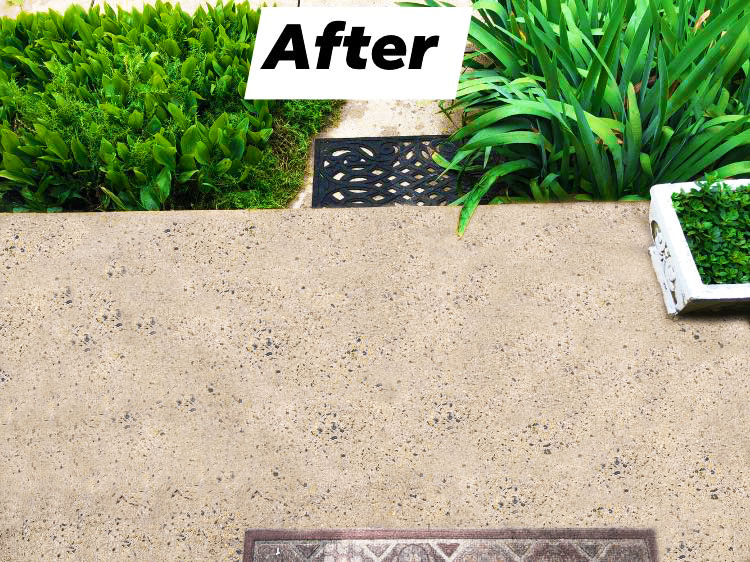
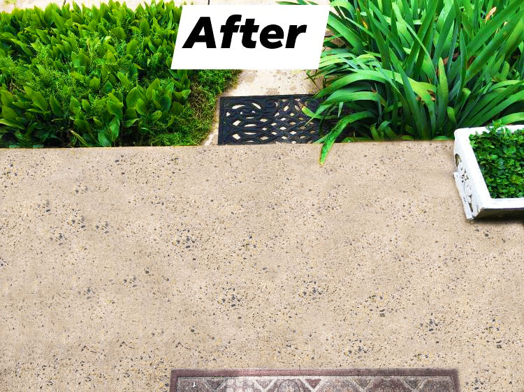

About us
Meet Mikael - Owner and Operator
Mikael Frey, the driving force behind Mike's Powerwashing, has been in the business for five years. With a profound understanding of the ins and outs of the industry, he's the heart and soul of our operation. Mikael's journey in the industry began with a simple electric Ryobi power washer, which he borrowed from his dad. Armed with this humble tool, he set out on a mission, going door to door to offer his services to neighbors and distribute fliers and business cards on foot.
In just two years, Mikael's unwavering dedication and commitment led to remarkable growth. He was able to expand his operation, employing a team of three skilled professionals. He acquired a dedicated work vehicle and an industrial-level power washer that has become the backbone of our services.
The Generac 6712 - A 3800 PSI Gas Power Washer
Our crown jewel is the Generac 6712 - 3800 PSI Gas Power Washer, a powerhouse of a machine that allows us to tackle the toughest cleaning tasks with ease.
Today, Mike's Powerwashing operates across most, if not all, of Northern Virginia. Our commitment to excellence, paired with Mikael's vision and expertise, has allowed us to grow and serve a diverse clientele. With over 5,000 satisfied clients served, we continue to build lasting relationships and maintain our dedication to delivering top-quality exterior cleaning services.